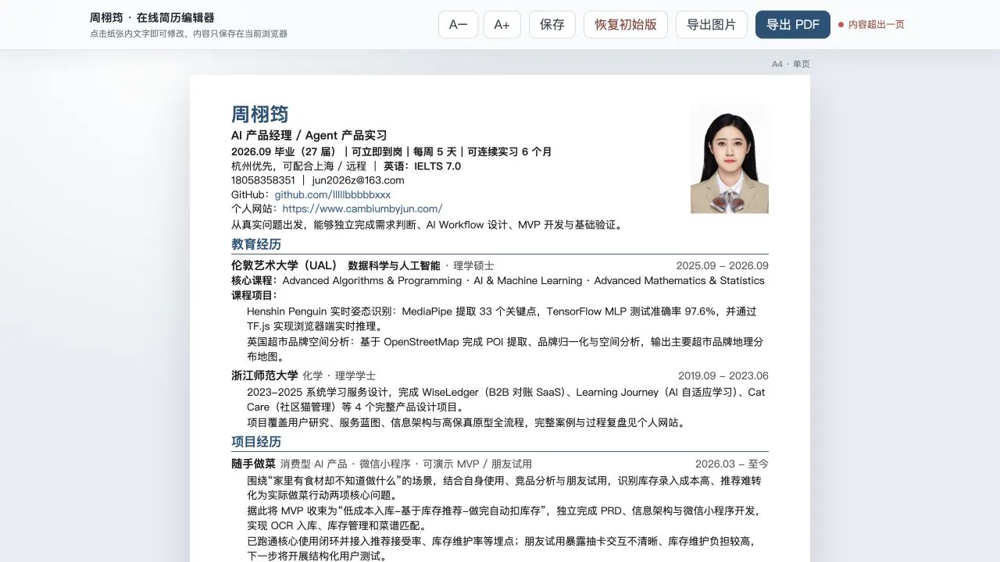

DOCUMENT TOOL · BROWSER EDITING
在线简历编辑器
为频繁修改的一页简历做的轻量编辑器。文字直接在 A4 页面中编辑，浏览器自动保存，修改完成后可导出 PDF 或高分辨率图片，不需要在排版软件和预览文件之间反复切换。
当前状态：可用原型。核心编辑、自动保存、字号微调、溢出提醒与导出已经实现；多版本管理仍在继续整理。
A4 预览编辑结果与最终页面同步
自动保存内容只存于当前浏览器
PDF / PNG支持打印与高分辨率图片导出
溢出提醒内容超过一页时及时提示
所见即所得编辑
工具栏只保留高频动作：调整字号、保存、恢复初始版和导出。页面主体就是最终简历，点击文字即可修改，避免抽象表单与最终版式脱节。

设计取舍
直接编辑
用页面内文字编辑替代长表单，修改后立刻看到版式变化。
本地优先
自动保存到浏览器，不建立账户，也不把简历内容上传到数据库。
控制一页
字号微调与溢出检测共同处理内容密度，而不是隐藏超出内容。
多种交付
既可通过浏览器打印得到 PDF，也可导出适合快速分享的图片。
下一步
当前版本服务于一份具体简历，验证了浏览器内直接编辑的效率。下一步会把“基础经历”和“岗位版本”分开管理，让不同方向的简历共享事实数据，同时保留各自的内容顺序与表述。